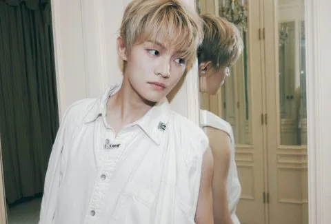
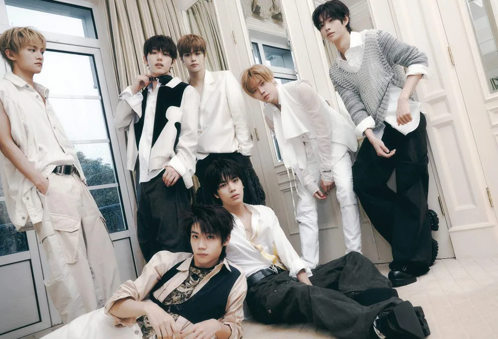
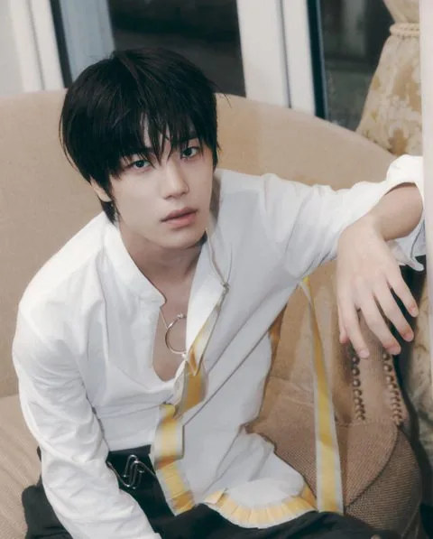
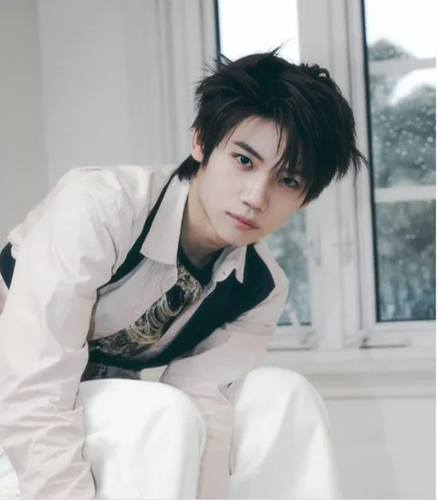
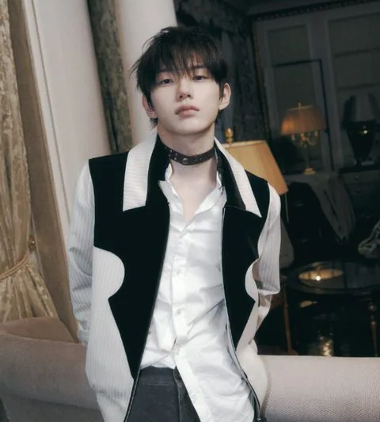

Jeon Minwook
Jeon Minwook (전민욱) · Leader, Main Rapper, Vocalist · Coréen

K-POP
Découvre CLOSE YOUR EYES et les profils de ses membres sur IBASE Asian Pop.
Ouvrir la fiche interactiveHistoire : CLOSE YOUR EYES (클로스 유어 아이스) est un boy group de projet global de 7 membres sous UNCORE, formé via l'émission de survie JTBC PROJECT 7 : Jeon Minwook, Ma Jingxiang, Jang Yeojun, Kim Sungmin, Song Seungho, Kenshin et Seo Kyoungbae. Il a débuté le 2 avril 2025 avec son premier mini-album « Eternalt ». Le nom du groupe : ils ne proposeront pas seulement des performances visibles, mais aussi une musique convaincante même les yeux fermés, en se renforçant comme des idoles que chacun imagine chaque fois qu'il ferme puis rouvre les yeux. Salutation officielle : « Hello, we are CLOSE YOUR EYES! ». Fandom : CLOSER, les personnes les plus proches du groupe, si précieuses qu'on pense à elles même les yeux fermés. Couleur officielle : non communiquée. Répartition des chambres : Kenshin et Minwook · Seungho et Jingxiang · Sungmin, Yeojun et Kyoungbae (chambres individuelles).
Débuts : 2 avril 2025 (premier mini-album « Eternalt »)
Agence : UNCORE

Jeon Minwook (전민욱) · Leader, Main Rapper, Vocalist · Coréen
Ma Jingxiang (마징시앙) · Center · Chinois
Jang Yeojun (장여준) · Sub-Leader, Main Dancer · Coréen
Kim Sungmin (김성민) · Visual · Thaïlandais-Coréen

Song Seungho (송승호) · Lead Rapper, Sub Vocalist · Coréen

Kenshin (켄신) · Vocalist, Rapper · Japonais

Seo Kyoungbae (서경배) · Main Vocalist, Maknae · Coréen